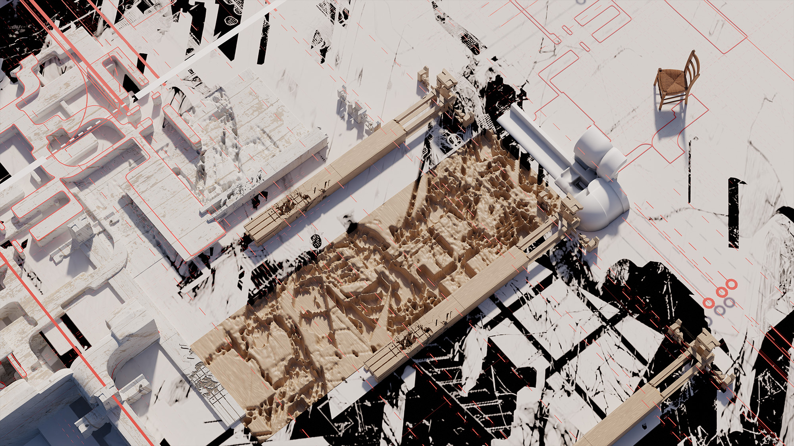

Palimpsest
Urban Archaeology — London, UKA city is never built once. It is written, erased, and written again.
This project reads London's urban fabric as a palimpsest — a manuscript scraped clean and rewritten, where the earlier text still bleeds through. The architecture is not designed from scratch. It is excavated from the composite memory of the site: streetscapes, facades, rooflines, and thresholds layered, fragmented, and reassembled into a new spatial condition.

Composite drawing — fragments of London layered, erased, rewritten
From Drawing to Terrain
The composite drawing acts as the generative source. Urban photographs, plans, and elevations are digitally collaged — overlaid until the individual sources become unrecognisable, producing a new terrain that belongs to no single building but remembers all of them.
This terrain is then translated into physical form through CNC milling and robotic fabrication — a topography that is at once abstract and deeply site-specific.

Fabrication — robotic arm milling the composite terrain